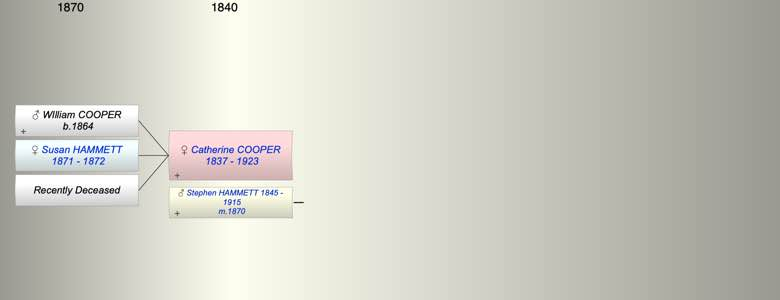

| [Index] |
| Catherine Julyan COOPER (1837 - 1923) |
|  |
| b. 1837 at Falmouth |
| m. 1870 Stephen HAMMETT (1845 - 1915) at Plymouth |
| d. 05 May 1923 at Plymouth aged 86 |
| Near Relatives of Catherine Julyan COOPER (1837 - 1923) | ||||||
| Relationship | Person | Born | Birth Place | Died | Death Place | Age |
| Father in Law | Nicholas John HAMMETT | 1812 | Plymouth | 1873 | Plympton St Mary | 61 |
| Mother in Law | Susan DURE | abt 1812 | 1891 | Plympton St Mary | 79 | |
| Self | Catherine Julyan COOPER | 1837 | Falmouth | 05 May 1923 | Plymouth | 86 |
| Husband | Stephen HAMMETT | 16 Jun 1845 | Plympton St Mary | 29 Apr 1915 | Plymouth | 69 |
| Son | WIlliam JANE COOPER | 1864 | Falmouth | |||
| Daughter | Susan Annie HAMMETT | 1871 | Plymouth | 1872 | Plymouth | 1 |
| Daughter | Living or Recently Deceased | |||||
| Daughter in Law | Phoebe Ann Newbury ROBERTS | |||||
| Niece | Living or Recently Deceased | |||||
| Nephew | George Goodwin BREWER | 27 Jan 1886 | Teignmouth | 1894 | 8 | |
| Niece | Living or Recently Deceased | |||||
| Niece | Living or Recently Deceased | |||||
| Nephew | Stewart G BREWER | 05 Jul 1890 | Teignmouth | 1892 | 2 | |
| Brother in Law | Robert H HAMMETT | 1838 | Stokenham | |||
| Sister in Law | Sarah Agnes HAMMETT | 1841 | Plymton | 1880 | 39 | |
| Events in Catherine Julyan COOPER (1837 - 1923)'s life | |||||
| Date | Age | Event | Place | Notes | Src |
| 1837 | Catherine Julyan COOPER was born | Falmouth | year from death | ||
| 1864 | 27 | Birth of son WIlliam JANE COOPER | Falmouth | ex 1881 census | |
| 1870 | 33 | Married Stephen HAMMETT (aged 25) | Plymouth | ||
| 1871 | 34 | Birth of daughter Susan Annie HAMMETT | Plymouth | ||
| 1872 | 35 | Death of daughter Susan Annie HAMMETT (aged 1) | Plymouth | ||
| 29 Apr 1915 | 78 | Death of husband Stephen HAMMETT (aged 69) | Plymouth | Note 1 | |
| 05 May 1923 | 86 | Catherine Julyan COOPER died | Plymouth | Note 2 | |
| Created on a Mac™ using iFamily for Mac™ on 15 Sep 2023 |